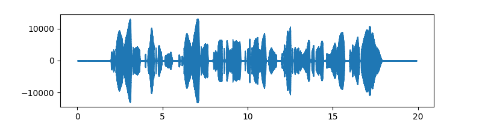

nnsvs.svs
BaseSVS
- class nnsvs.svs.BaseSVS[source]
Base class for singing voice synthesis (SVS) inference
All SVS engines should inherit from this class.
The input of the SVS engine uses the HTS-style full-context labels. The output should be a tuple of raw waveform and sampling rate. To allow language-independent SVS, this base class does not define the interface for the frontend functionality such as converting musicXML/UST to HTS labels. The frontend processing should be done externally (e.g., using pysinsy or utaupy) or can be implemented with an optional method.
SPSVS
- class nnsvs.svs.SPSVS(model_dir, device='cpu', verbose=0)[source]
Statistical parametric singing voice synthesis (SPSVS)
Use the
svsmethod for the simplest inference, or use the separated methods (e.g.,``predict_acoustic`` andpredict_waveform) to control each components of the parametric SVS system.- Parameters:
Examples:
Synthesize wavefrom from a musicxml file
import numpy as np import pysinsy from nnmnkwii.io import hts from nnsvs.pretrained import retrieve_pretrained_model from nnsvs.svs import SPSVS from nnsvs.util import example_xml_file import matplotlib.pyplot as plt # Instantiate the SVS engine model_dir = retrieve_pretrained_model("r9y9/yoko_latest") engine = SPSVS(model_dir) # Extract HTS labels from a MusicXML file contexts = pysinsy.extract_fullcontext(example_xml_file(key="get_over")) labels = hts.HTSLabelFile.create_from_contexts(contexts) # Run inference wav, sr = engine.svs(labels) # Plot the result fig, ax = plt.subplots(figsize=(8,2)) librosa.display.waveshow(wav.astype(np.float32), sr=sr, ax=ax)
 With WORLD vocoder:
>>> wav, sr = engine.svs(labels, vocoder_type="world")
With a uSFGAN or SiFiGAN vocoder:
>>> wav, sr = engine.svs(labels, vocoder_type="usfgan")
- predict_timelag(labels)[source]
Predict time-ag from HTS labels
- Parameters:
labels (nnmnkwii.io.hts.HTSLabelFile) – HTS labels.
- Returns:
Predicted time-lag.
- Return type:
ndarray
- predict_duration(labels)[source]
Predict durations from HTS labels
- Parameters:
labels (nnmnkwii.io.hts.HTSLabelFile) – HTS labels.
- Returns:
Predicted durations.
- Return type:
ndarray
- postprocess_duration(labels, pred_durations, lag)[source]
Post-process durations
- Parameters:
labels (nnmnkwii.io.hts.HTSLabelFile) – HTS labels.
pred_durations (ndarray) – Predicted durations.
lag (ndarray) – Predicted time-lag.
- Returns:
duration modified HTS labels.
- Return type:
nnmnkwii.io.hts.HTSLabelFile
- predict_timing(labels)[source]
Predict timing from HTS labels
- Parameters:
labels (nnmnkwii.io.hts.HTSLabelFile) – HTS labels.
- Returns:
duration modified HTS labels.
- Return type:
nnmnkwii.io.hts.HTSLabelFile
- predict_acoustic(duration_modified_labels, f0_shift_in_cent=0)[source]
Predict acoustic features from HTS labels
- Parameters:
duration_modified_labels (nnmnkwii.io.hts.HTSLabelFile) – HTS labels.
f0_shift_in_cent (float) – F0 shift in cent.
- Returns:
Predicted acoustic features.
- Return type:
ndarray
- postprocess_acoustic(duration_modified_labels, acoustic_features, post_filter_type='gv', trajectory_smoothing=True, trajectory_smoothing_cutoff=50, trajectory_smoothing_cutoff_f0=20, vuv_threshold=0.5, force_fix_vuv=False, fill_silence_to_rest=False, f0_shift_in_cent=0)[source]
Post-process acoustic features
The function converts acoustic features in single ndarray to tuple of multi-stream acoustic features.
e.g., array -> (mgc, lf0, vuv, bap)
If post_filter_type=``nnsvs`` is specified, learned post-filter is applied. However, it is recommended to use
gvin general.- Parameters:
duration_modified_labels (nnmnkwii.io.hts.HTSLabelFile) – HTS labels.
acoustic_features (ndarray) – Predicted acoustic features.
post_filter_type (str) – Post-filter type. One of
gv,merlinornnsvs. Recommended to usegvfor general purpose.trajectory_smoothing (bool) – Whether to apply trajectory smoothing.
trajectory_smoothing_cutoff (float) – Cutoff frequency for trajectory smoothing of spectral features.
trajectory_smoothing_cutoff_f0 (float) – Cutoff frequency for trajectory smoothing of f0.
vuv_threshold (float) – V/UV threshold.
force_fix_vuv (bool) – Force fix V/UV.
fill_silence_to_rest (bool) – Fill silence to rest frames.
f0_shift_in_cent (float) – F0 shift in cent.
- Returns:
Post-processed multi-stream acoustic features.
- Return type:
- predict_waveform(multistream_features, vocoder_type='world', vuv_threshold=0.5)[source]
Predict waveform from acoustic features
- postprocess_waveform(wav, dtype=<class 'numpy.int16'>, peak_norm=False, loudness_norm=False, target_loudness=-20)[source]
Post-process waveform
- Parameters:
- Returns:
Post-processed waveform.
- Return type:
ndarray
- svs(labels, vocoder_type='world', post_filter_type='gv', trajectory_smoothing=True, trajectory_smoothing_cutoff=50, trajectory_smoothing_cutoff_f0=20, vuv_threshold=0.5, style_shift=0, force_fix_vuv=False, fill_silence_to_rest=False, dtype=<class 'numpy.int16'>, peak_norm=False, loudness_norm=False, target_loudness=-20, segmented_synthesis=False)[source]
Synthesize waveform from HTS labels.
- Parameters:
labels (nnmnkwii.io.hts.HTSLabelFile) – HTS labels
vocoder_type (str) – Vocoder type. One of
world,pwgorusfgan. Ifautois specified, the vocoder is automatically selected.post_filter_type (str) – Post-filter type.
merlin,gvornnsvsis supported.trajectory_smoothing (bool) – Whether to smooth acoustic feature trajectory.
trajectory_smoothing_cutoff (int) – Cutoff frequency for trajectory smoothing.
trajectory_smoothing_cutoff_f0 (int) – Cutoff frequency for trajectory smoothing of f0.
vuv_threshold (float) – Threshold for VUV.
style_shift (int) – style shift parameter
force_fix_vuv (bool) – Whether to correct VUV.
fill_silence_to_rest (bool) – Fill silence to rest frames.
dtype (np.dtype) – Data type of the output waveform.
peak_norm (bool) – Whether to normalize the waveform by peak value.
loudness_norm (bool) – Whether to normalize the waveform by loudness.
target_loudness (float) – Target loudness in dB.
segmneted_synthesis (bool) – Whether to use segmented synthesis.
NEUTRINO
- class nnsvs.svs.NEUTRINO(model_dir, device='cpu', verbose=0)[source]
NEUTRINO-like interface for singing voice synthesis
- Parameters:
- classmethod musicxml2label(input_file)[source]
Convert musicXML to full and mono HTS labels
- Parameters:
input_file (str) – musicXML file
- get_num_phrases(labels)[source]
Get number of phrases
- Parameters:
labels (nnmnkwii.io.hts.HTSLabelFile) – HTS label
- Returns:
number of phrases
- Return type:
- get_phraselist(full_labels, timing_labels)[source]
Get phraselit from full and timing HTS labels
- Parameters:
full_labels (nnmnkwii.io.hts.HTSLabelFile) – full HTS label
timing_labels (nnmnkwii.io.hts.HTSLabelFile) – timing HTS label
- Returns:
phraselist
- Return type:
- predict_acoustic(full_labels, timing_labels=None, style_shift=0, phrase_num=-1, trajectory_smoothing=True, trajectory_smoothing_cutoff=50, trajectory_smoothing_cutoff_f0=20, vuv_threshold=0.5, force_fix_vuv=False, fill_silence_to_rest=False)[source]
Main inference of timing and acoustic predictions
- Parameters:
full_labels (nnmnkwii.io.hts.HTSLabelFile) – full HTS label
timing_labels (nnmnkwii.io.hts.HTSLabelFile) – timing HTS label
style_shift (int) – style shift parameter
phrase_num (int) – phrase number to use for inference
trajectory_smoothing (bool) – whether to apply trajectory smoothing
trajectory_smoothing_cutoff (float) – cutoff frequency for trajectory smoothing
trajectory_smoothing_cutoff_f0 (float) – cutoff frequency for trajectory smoothing for f0
vuv_threshold (float) – V/UV threshold
force_fix_vuv (bool) – whether to force fix V/UV
fill_silence_to_rest (bool) – Fill silence to rest frames.
- Returns:
(f0, mgc, bap)
- Return type:
- predict_waveform(f0, mgc, bap, vocoder_type='world', vuv_threshold=0.5, dtype=<class 'numpy.int16'>, peak_norm=False, loudness_norm=False, target_loudness=-20)[source]
Generate waveform from acoustic features
- Parameters:
f0 (ndarray) – f0
mgc (ndarray) – mel-cepstrum
bap (ndarray) – band-aperiodicity
vocoder_type (str) – vocoder type
vuv_threshold (float) – V/UV threshold
dtype (np.dtype) – Data type of the output waveform.
peak_norm (bool) – Whether to normalize the waveform by peak value.
loudness_norm (bool) – Whether to normalize the waveform by loudness.
target_loudness (float) – Target loudness in dB.
- Returns:
waveform
- Return type:
ndarray